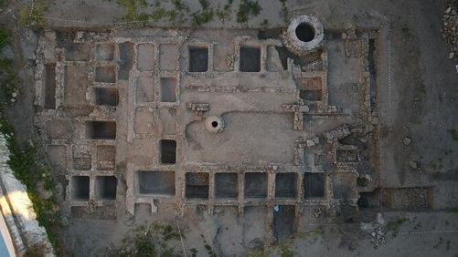

|
CÁDIZ ROMANO
En el siglo III a.e.c es conquistado por los romanos que ya controlaban el Valle del Guadalquivir. Restos romanos en la provincia de Cádiz: -En Jimena de la Frontera, la antigua Oba, debajo del castillo de época musulmana, destacan los restos de época romana. Se han localizado las puertas principales, torres, infraestructuras hidráulicas y un templo. En diciembre de 2015. - Ocuri se halla en la cima del Salto de la Mora, en las inmediaciones de la actual Ubrique. Conjunto arqueológico en el que se conservan restos de arquitectura funeraria, vestigios de arquitectura doméstica, murallas y restos de infraestructuras para abastecimiento. - A 5 km de Prado del Rey se localiza Iptuci, se conservan los restos de sus murallas y torreones, así como con algunos vestigios de pavimentos y elementos arquitectónicos de viviendas de la ciudad romana datada en el siglo II. Colonia Ituci Virtus Julia. - En el término de Arcos de la Frontera se halla el yacimiento de Sierra de Aznar, antigua ciudad ibero-romana. Pueden apreciarse parte de sus murallas, restos de casas, la necrópolis, y restos del sistema hidráulico de abastecimiento, aljibes y áreas de decantación y depuración. - A pocos kilómetros de Espera se hallan las ruinas de Carissa Aurelia. Poblada desde el Neolítico, alcanzó su mayor desarrollo y esplendor durante la época romana siglos II-IV. A este período corresponden las dos necrópolis excavadas en la roca, el núcleo amurallado, el mausoleo y los restos del sistema hidráulico de abastecimiento. - El yacimiento arqueológico fenicio con instalaciones para producir vino, del siglo III a.e.c. en el Puerto de Santa María. - Carteia. - En Mesas de Asta se localiza Asta Regia. Poblada desde el último tramo del Neolítico hasta el Siglo XI. Fue abandonada y la población se desplazó a donde se ubica actualmente Jerez de la Frontera. - En Barbate, la antigua Baesippo, en marzo de 2018, el temporal Emma, en Caños de Meca descubre restos de unas piletas de salazón romanas. Se trata de un recinto de más de 100 metros cuadrados, ubicado en la misma zona en la que se encuentran las conocidas 'piscinae' o balsas romanas de Trafalgar. La construcción descubierta aparece bien conservada, ya que la arena que hasta ahora la ha cubierto ha preservado buena parte de la estructura. Las excavaciones de marzo de 2021, documentan los restos de una zona residencial romana en la que vivían los dueños del primer vivero romano de toda la Bética y que se ubica en el tómbolo de Trafalgar. También se ha documentado una industria de salazones en la misma zona con piletas en buen estado de conservación y otra ubicada a unos 500 metros en la playa, así como un yacimiento prehistórico. En mayo de 2021, en las dunas que rodean el Cabo de Trafalgar, hallan en la costa unas termas romanas excepcionalmente conservadas. Foto: Agencia EFE
- En agosto de 2020 hallan un candelabrum romano del siglo II en Zahara de la Sierra. La hipótesis sobre la que se trabaja es que se trate de una zona de necrópolis ubicada en una de las vías de acceso a la población en época romana. - El yacimiento arqueológico de Mellaria, ubicado a pie de playa de Valdevaqueros, en Tarifa. Una factoría de salazones entre los siglos IV y III a.e.c. - En Rota, julio 2022, se ponen en valor las piletas de salazón de la calle Almenas. Uno de los restos romanos más importantes de la ciudad, hallados en 2018. - Las factorías de salazón romanas de Iulia Traducta en Algeciras. La fábrica de salazón estuvo funcionando durante cinco siglos, adaptándose con el paso de los años. Según los arqueólogos, “Hemos descubierto que aquellas piletas de allí se terminaron usando para elaborar harina de pescado”. La sorpresa es que la parcela se utilizó para el mismo fin en época romana, árabe y medieval. En esta última etapa, se construyó una fosa de descartes. “Se quedaban con los lomos y arrojaban todo lo que no les servía: cabezas, columnas, aletas...
 Foto EuropaSur
|